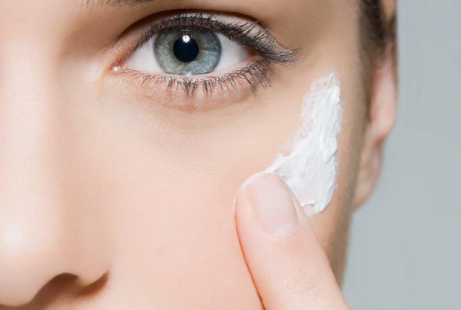

Дневные и вечерние крема: действительно ли есть отличия?
Современная косметология предлагает массу средств по уходу за кожей. Наиболее популярными являются кремы, которые принято делить на дневные и вечерние. Однако далеко не каждая женщина задумывается об их отличии. Как правило, на упаковках обозначают общие свойства: увлажняющий, против морщин, отбеливающий и т.д. Разница лишь в пометке «дневной» или «ночной». Есть на самом деле отличия между этими кремами? Или это просто маркетинговый ход?
Дневной крем
- Дневной крем имеет легкую текстуру. Он не закупоривает поры, обогащен необходимыми питательными элементами, которые контролируют баланс влаги и регулируют работу сальных желез. На 60% кремы этого типа состоят из воды.
- Пользоваться ими лучше после 18 лет. Когда уже миновали проблемы переходного возраста, и организм вошел в спокойный гормональный ритм.
- Дневные кремы также содержат специальные вещества, которые защищают от табачного дыма и сухого, морозного ветра, и УФ-фильтр. Насыщенные кремы с витаминами А, Е, С, минеральными солями и биостимуляторами подходят женщинам после 25 лет. Юная кожа от такого витаминного коктейля может «облениться» и перестать вырабатывать естественные защитные вещества. А это приведет к раннему старению.

Вечерний (ночной) крем
- Ночной крем более плотный по текстуре. Он предназначен для восстановления кожи лица во время сна, насыщения ее микроэлементами, которые были утрачены в дневное время.
- Он является вспомогательным средством и применяется после 25 лет. В этом возрасте кожа уже менее склонна к самовосстановлению, отчего могут появиться первые признаки старения. Специальные добавки вечернего крема помогают справиться с этим.
- Так как вечерний крем очень жирный, то его стоит наносить за полтора-два часа до сна. Необходимая часть крема впитается, а остатки следует удалить салфеткой.
- Применение ночных кремов не является обязательным. Их рекомендуется использовать только при сухой коже, либо в особых случаях, когда кожа нуждается в дополнительном питании (зимой, после простудных заболеваний).
Истoчник: https://zhenskoe-mnenie.ru